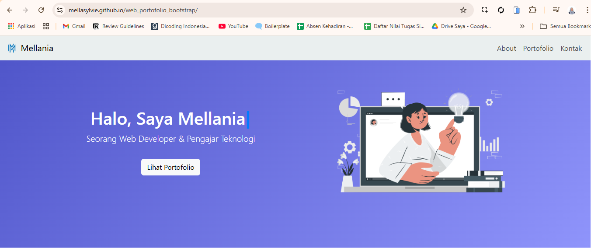

Membuat Web Portofolio
Proyek Web Portofolio

Pada pertemuan ini, kita akan membuat sebuah web portofolio sederhana dengan HTML, Bootstrap, dan JS. Web portofolio ini akan menampilkan informasi tentang diri kita, seperti nama, portofolio, dan kontak. Nantinya web portofolio ini akan kita upload ke GitHub Pages agar dapat diakses secara online. Seperti contoh berikut ini:
Contoh Web PortofolioTools yang Digunakan
- Visual Studio Code
- Bootstrap – https://getbootstrap.com/
- Bootstrap Icons – https://icons.getbootstrap.com/
- ColorHunt (Referensi Warna) – https://colorhunt.co/
- StorySet (Ilustrasi Vektor) – https://storyset.com/
File asset/gambar pada proyek ini dapat diunduh melalui tautan
berikut:
Unduh Asset Proyek (Google Drive)
Langkah-langkah Pembuatan
Langkah 1. Buat Folder Proyek
Buat folder proyek utama yang berisi struktur sebagai berikut:
index.html-
css/
style.css
- img/ (menyimpan gambar-gambar)
-
js/
script.js

Langkah 2. Menyusun kode awal
Menyusun struktur awal file HTML
Pada tahap ini dilakukan penyusunan struktur awal HTML,
menghubungkan Bootstrap, Bootstrap Icons, dan file CSS pada bagian
<head>, serta menyusun struktur
semantic HTML menggunakan tag header,
main, dan footer.
Silakan tuliskan kode berikut pada file index.html:
<!DOCTYPE html>
<html lang="id">
<head>
<meta charset="UTF-8" />
<meta name="viewport" content="width=device-width, initial-scale=1" />
<title>Portofolio - Mellania</title>
<link href="https://cdn.jsdelivr.net/npm/bootstrap@5.3.2/dist/css/bootstrap.min.css" rel="stylesheet"/>
<link rel="stylesheet" href="css/style.css" />
<link href="https://cdn.jsdelivr.net/npm/bootstrap-icons@1.10.5/font/bootstrap-icons.css" rel="stylesheet"/>
</head>
<body>
<!-- Header -->
<header>
</header>
<!-- Konten Web -->
<main>
</main>
<!-- Footer -->
<footer class="py-3">
</footer>
<script src="js/script.js"></script>
<script src="https://cdn.jsdelivr.net/npm/bootstrap@5.3.2/dist/js/bootstrap.bundle.min.js"></script>
</body>
</html>
Langkah 3. Tuliskan Aturan CSS
Tuliskan styling pada file style.css
Silakan tuliskan kode rule CSS berikut untuk mengatur tampilan hero,
animasi kursor, portofolio card, dan footer.
body {
font-family: "Segoe UI", sans-serif;
}
.hero {
background: linear-gradient(135deg, #4e54c8, #8f94fb);
color: white;
padding: 100px 0;
text-align: center;
}
.cursor {
display: inline-block;
color: #007bff;
animation: blink 1s infinite;
font-weight: bold;
}
@keyframes blink {
0% { opacity: 1; }
50% { opacity: 0; }
100% { opacity: 1; }
}
.portfolio-card {
transition: transform 0.3s;
}
.portfolio-card:hover {
transform: scale(1.05);
}
footer {
background-color: #eaefef;
text-align: center;
padding: 20px 0;
}
Langkah 4. Membuat Navbar
Membuat Navbar
Navbar dituliskan di dalam elemen <header>.
Silakan salin kode berikut dan tempatkan di dalam bagian
<header> pada file index.html.
<!-- Navbar -->
<nav
class="navbar navbar-expand-lg fixed-top"
style="background-color: #eaefef"
>
<div class="container-fluid">
<a class="navbar-brand" href="#">
<img
src="img/logo_mella.png"
alt="Logo"
width="30"
height="30"
class="d-inline-block align-text-top"
/>
Mellania
</a>
<button
class="navbar-toggler"
type="button"
data-bs-toggle="collapse"
data-bs-target="#navbarNav"
aria-controls="navbarNav"
aria-expanded="false"
aria-label="Toggle navigation"
>
<span class="navbar-toggler-icon"></span>
</button>
<div
class="collapse navbar-collapse justify-content-end"
id="navbarNav"
>
<!-- List Menu -->
<ul class="navbar-nav">
<li class="nav-item">
<a class="nav-link" aria-current="page" href="#about">About</a>
</li>
<li class="nav-item">
<a class="nav-link" href="#portofolio">Portofolio</a>
</li>
<li class="nav-item">
<a class="nav-link" href="#kontak">Kontak</a>
</li>
</ul>
</div>
</div>
</nav>
Langkah 5. Membuat bagian HERO
Membuat Bagian Hero
Bagian Hero diletakkan tepat di bawah kode Navbar. Silakan salin dan
tempel kode berikut pada file index.html setelah elemen
</nav>.
<!-- Hero -->
<section class="hero py-4 bg-light">
<div class="container">
<div class="row align-items-center">
<!-- Bagian Teks-->
<div class="col-md-6">
<h1>
<span id="typing-text"></span><span class="cursor">|</span>
</h1>
<p class="lead">Seorang Web Developer & Pengajar Teknologi</p>
<a href="#portofolio" class="btn btn-light mt-3">
Lihat Portofolio
</a>
</div>
<!-- Bagian Gambar -->
<div class="col-md-6 text-center">
<img
src="img/hero.png"
alt="Foto Profil"
class="img-fluid"
style="max-width: 80%"
/>
</div>
</div>
</div>
</section>
Langkah 6. Menambahkan Kode JavaScript
Menambahkan Kode JavaScript
Tambahkan kode berikut ke dalam file script.js untuk
membuat efek teks yang diketik secara otomatis pada elemen hero.
const text = "Halo, Saya Mellania";
const typingElement = document.getElementById("typing-text");
let charIndex = 0;
let isDeleting = false;
function typeLoop() {
if (!isDeleting) {
typingElement.textContent = text.substring(0, charIndex + 1);
charIndex++;
if (charIndex === text.length) {
isDeleting = true;
setTimeout(typeLoop, 1500); // jeda sebelum menghapus
return;
}
} else {
typingElement.textContent = text.substring(0, charIndex - 1);
charIndex--;
if (charIndex === 0) {
isDeleting = false;
}
}
setTimeout(typeLoop, isDeleting ? 50 : 100); // kecepatan mengetik / hapus
}
document.addEventListener("DOMContentLoaded", typeLoop);
Langkah 7: Membuat konten bagian "Tentang Saya"
Silahkan buat konten tentang saya di dalam elemen
<main>. Salin dan tempelkan kode berikut:
<!-- Tentang Saya -->
<section id="about" class="py-5">
<div class="container pt-4">
<h2 class="text-center mb-4">Tentang Saya</h2>
<div class="row justify-content-center">
<div class="col-md-8">
<p>
Saya adalah seorang pengembang web dan pendidik yang memiliki
passion dalam mengembangkan teknologi edukatif. Saya
berpengalaman dalam membuat aplikasi web, mengajar pemrograman,
dan membimbing siswa dalam project berbasis teknologi.
</p>
</div>
</div>
</div>
</section>
Langkah 8. Menambahkan bagian Portofolio
Silahkan tuliskan kode bagian portofolio dibawah kode bagian tentang saya. Silahkan tuliskan kode berikut :
<!-- Portofolio -->
<section id="portofolio" class="py-5 bg-light">
<div class="container pt-4">
<h2 class="text-center mb-5">Portofolio</h2>
<div class="row g-4">
<!-- Kolom 1 -->
<div class="col-md-4">
<div class="card portfolio-card">
<img
src="img/proyek1.png"
class="card-img-top"
alt="Project 1"
style="height: 250px; object-fit: cover"
/>
<div class="card-body">
<h5 class="card-title">Aplikasi Siswa</h5>
<p class="card-text">
Aplikasi data siswa berbasis web dengan fitur CRUD dan login
admin.
</p>
<a href="#" class="btn btn-primary">Lihat Aplikasi</a>
</div>
</div>
</div>
<!-- Kolom 2 -->
<div class="col-md-4">
<div class="card portfolio-card">
<img
src="img/proyek2.png"
class="card-img-top"
alt="Project 1"
style="height: 250px; object-fit: cover"
/>
<div class="card-body">
<h5 class="card-title">Dashboard IoT</h5>
<p class="card-text">
Dashboard monitoring suhu & kelembaban real-time dengan
Flask dan Microdot.
</p>
<a href="#" class="btn btn-primary">Lihat Aplikasi</a>
</div>
</div>
</div>
<!-- Kolom 3 -->
<div class="col-md-4">
<div class="card portfolio-card">
<img
src="img/proyek3.png"
class="card-img-top"
alt="Project 1"
style="height: 250px; object-fit: cover"
/>
<div class="card-body">
<h5 class="card-title">Klasifikasi Gambar AI</h5>
<p class="card-text">
Website untuk klasifikasi gambar menggunakan model AI
</p>
<a href="#" class="btn btn-primary">Lihat Aplikasi</a>
</div>
</div>
</div>
</div>
</div>
</section>
Langkah 9: Menambahkan bagian Kontak
Silahkan buat bagian Kontak setelah bagian Portofolio. Silahkan tuliskan kode berikut:
<!-- Kontak -->
<section id="kontak" class="py-5 bg-light text-center">
<div class="container">
<h2 class="mb-3">Kontak</h2>
<p class="mb-4 text-muted">
Silakan hubungi saya melalui media sosial berikut
</p>
<div class="d-flex justify-content-center gap-4 flex-wrap">
<a
href="https://wa.me/6285781761657"
target="_blank"
class="text-decoration-none text-primary"
>
<i class="bi bi-whatsapp"></i><br />Whatsapp
</a>
<a
href="mailto:mellaniapermata@gmail.com"
target="_blank"
class="text-decoration-none text-primary"
>
<i class="bi bi-envelope-at"></i><br />Email
</a>
<a
href="https://instagram.com"
target="_blank"
class="text-decoration-none text-danger"
>
<i class="bi bi-instagram"></i><br />Instagram
</a>
</div>
</div>
</section>
Langkah 10. Menambahkan Footer
Silahkan tulis kode berikut setelah elemen
<main>:
<!-- Footer -->
<footer class="py-3">
<div
class="container d-flex justify-content-between align-items-center flex-column flex-md-row"
>
<!-- Sisi Kiri Teks-->
<p class="mb-2 mb-md-0">© 2025 Mellania Permata Sylvie</p>
<!-- Sisi Kanan Ikon Sosmed-->
<div>
<a href="https://github.com/mellasylvie" target="_blank">
<i class="bi bi-github fs-5"></i>
</a>
</div>
</div>
</footer>
Refleksi
Bagaimana, apakah web portofolionya sudah jadi?
Apakah kamu mengikuti langkah-langkah dengan benar?
Coba periksa kembali bagian-bagian penting seperti struktur HTML,
penempatan CSS, dan file gambar.
Tugas Praktek
Tugas hari ini:
1. Silahkan ubah warna dari web portofolio yang kamu buat. Jangan
sampai warnanya sama dengan warna web portofolio saya.
2. Silahkan ganti keterangan isi konten pada web-nya. Sesuaikan
dengan datamu.
3. Silahkan ganti gambar dan link kontak sosial media milikmu.
Jadi silahkan sesuaikan isi web portofoliomu ya. Sesuaikan dengan
datamu. Jangan sampai masih tertulis data saya.
Selamat Mengerjakan :D